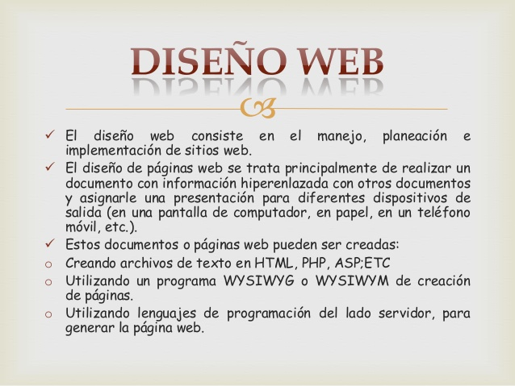

Conceptos02:
Para el diseño de páginas web debemos tener en cuenta tres etapas:
El diseño visual de la información que se desea editar. En esta etapa se trabaja distribuyendo el texto, los gráficos, los vínculos a otros documentos y otros objetos multimedia que se consideren pertinentes. Es importante que antes de 'escribir' la página web se realice un boceto o prediseño. Esto facilitará tener un orden claro sobre el diseño.
Estructura y relación jerárquica de las páginas del sitio web. Para esto, y fundamentalmente para manejar los vínculos entre documentos, se creó el lenguaje de marcación de hipertexto o HTML. Los enlaces que aparecen subrayados en este documento y otros de Wikipedia son ejemplos de hipertexto, puesto que al pulsar sobre ellos conducen a otras páginas con información relacionada. La importancia de la estructura y arborescencia web radica en que los usuarios no siempre entran por la página principal o inicial y en ese caso el sitio debe darle la respuesta a lo que busca rápido, además permitirle navegar por el sitio.
Posicionamiento en buscadores o SEO: consiste en optimizar la estructura del contenido para mejorar la posición en que aparece la página en los motores de búsqueda web por una o varias palabras clave.
